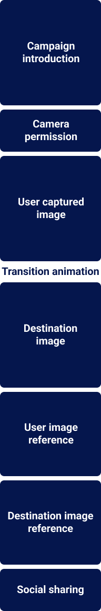

User and Conversation Flow
We created user and conversation flows that move seamlessly from capture to reveal, supported by a friendly, concise tone aligned with Lufthansa's voice. Each step is designed to guide without overwhelming, making the journey feel natural and inspiring.

